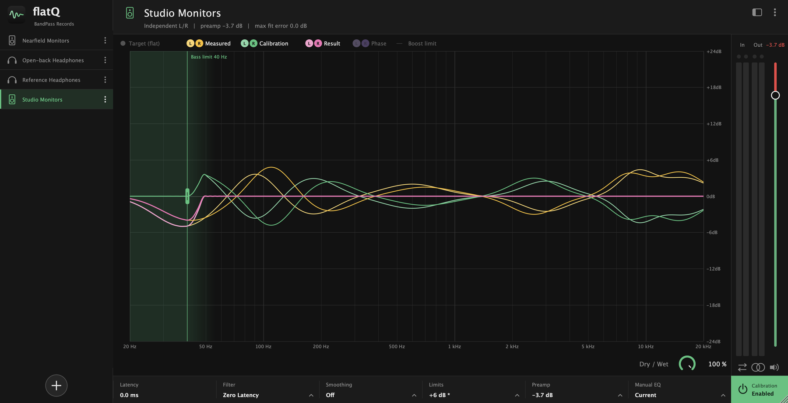
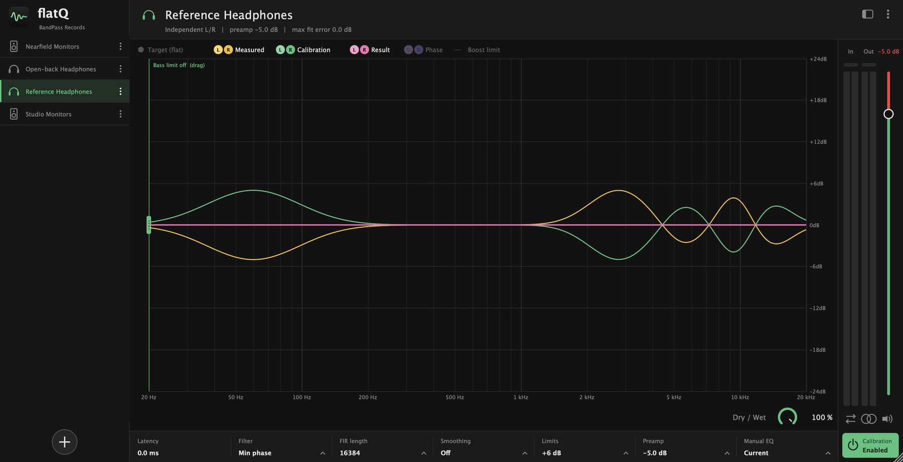
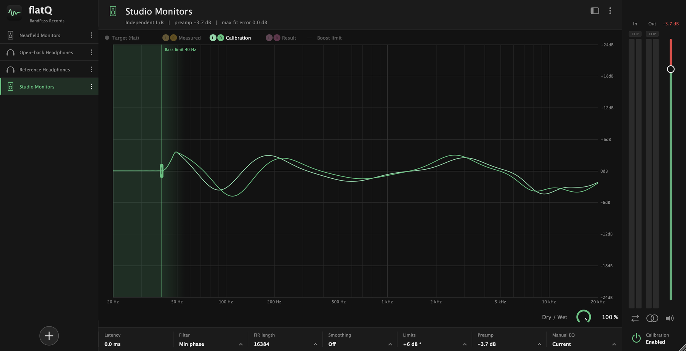

Mix on a flat, honest response.
flatQ corrects your headphones or speakers, so the mix you hear is your music and not the quirks of your gear.
macOS · Windows · Linux

Screenshots
Headphones and speakers, side by side
The same view for both: what your gear does, the correction and the result, for each channel. Click a picture to see it larger.


Everything is explained in the docs.
What it does
A flat reference, on any monitor
Every pair of headphones and every speaker colours the sound a little. flatQ loads a profile and applies the opposite, so what reaches your ears is as flat as it can be.
Profiles
Bring your own calibration
Load a profile for your headphones or your monitors and switch between them from the library on the left. Rename, duplicate, export or delete from the menu on each one.
- flatQ profiles and RME TotalMix Room EQ files
- AutoEq measurement and target CSVs, turned into a profile
- Speaker profiles keep separate left and right curves
Limits
Correction without the clipping
Deep dips in a measurement ask for huge boosts. flatQ keeps them in check so a profile never pushes your output into the red.
- Global max boost plus the profile's own ceiling
- A bass limit that cancels boosts below the frequency you choose
- Slope limiter and treble smoothing against ringing
- Automatic preamp, shown right on the output fader
Control
See it. Compare it. Switch it off.
The graph shows what your gear does, the correction and the result, for each channel. One button turns the calibration off to hear the difference.
- Input and output meters with clip lights
- Mono, swap channels, mute and a dry / wet mix
- Notices on the graph whenever something changes what you hear
Under the hood
Built for critical listening
Pick the trade-off between latency and phase accuracy that suits the job.
Default
Minimum-phase FIR
A smooth, natural correction with no pre-ringing. 4096 to 65536 taps; 16384 by default.
Accuracy
Linear-phase FIR
Perfectly symmetric, for when phase accuracy matters more than latency.
Low latency
IIR
Peaking filters with 6 or 48 bands per octave, for monitoring while you record.
Manual
31-band trim
Adjust each third-octave band on top of the profile, per channel or linked, and save the result as a new profile.
Export
Skip on offline export
Pass the audio through untouched during offline renders, so a mixdown never carries your monitor correction.
Targets
Flat, or a curve you prefer
Ships with the AutoEq target curves, such as Harman, for importing a measurement against the target you like.
Every control is explained in the docs.
Formats
Put it last on your master
Insert flatQ as the last effect on your master or stereo out.
| Platform | VST3 | AU |
|---|---|---|
| macOS | ✓ | ✓ |
| Windows | ✓ | — |
| Linux | ✓ | — |
Download
Get flatQ
Version 0.1.0. A zip with the plug-in for your system.
macOS
VST3 and Audio Unit, for Intel and Apple silicon.
Download VST3 (.zip) Download AU (.zip)Copy flatQ.vst3 to ~/Library/Audio/Plug-Ins/VST3 and flatQ.component to ~/Library/Audio/Plug-Ins/Components.
Windows
VST3, for 64-bit Windows.
Download VST3 (.zip)Copy the flatQ.vst3 folder to C:\Program Files\Common Files\VST3.
Other systems: macOS · Windows · Linux
Need help installing it? See the docs. Source code and every release on GitHub.